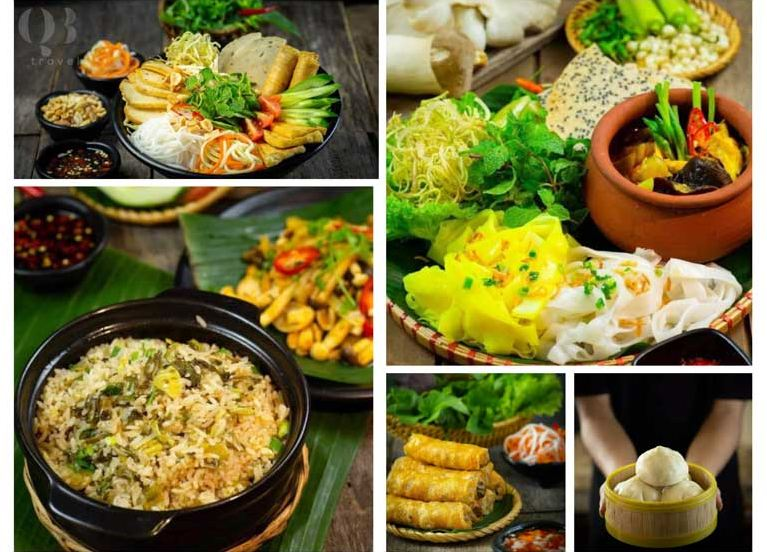

11:43AM - 29/12/2021
Quảng Bình luôn thu khách du khách bởi vẻ đẹp mê hoặc của các hệ thống hang động, thiên nhiên mang đậm nét hoang sơ nhưng vô cùng hùng vĩ, những bãi cát trắng trải dài bên bờ biển thơ mộng. Song song với du lịch, ẩm thực mộc mạc mang những nét đặc trưng riêng nơi đây cũng là điểm cực kỳ hấp dẫn đối với các du khách cũng như những tín đồ ăn uống.
 Ẩm thực Quảng BìnhBánh lọc là món đặc sản ở xứ Huế, nhưng khi đến Quảng Bình được chế biến theo cách khác biệt riêng. Thưởng thức hương vị thơm ngon, nóng hổi dai mềm với phần nhân đậm vị, nhiều tôm, thịt, mộc nhĩ và măng của món bánh này sẽ mang đến cho thực khách hương vị khó quên. Thậm chí, rất nhiều người đã mua món bánh này như một món quà khi trở về
Một số gợi ý quán ngon dành cho bạn:
Cháo canh là một trong những món ăn quen thuộc mang hương vị quê hương đối với mỗi người dân Quảng Bình. Những nguyên liệu không thể thiếu trong mỗi tô cháo gồm sợi mì/gạo, thịt nạc và cá lóc đặc biệt ăn kèm với ram (nem, chả giò) - tên gọi đậm chất mộc mạc của người dân nơi đây làm. Hương vị ngon ngọt của nước dùng hòa quyện cùng những sợi mỳ và thớ thịt chắc chắn sẽ làm bạn xiêu lòng.
Ngoài ra, món ăn này còn được biến tấu theo nhiều hình thức khác như có kết hợp với lòng, gan, dồi heo hay với thịt cua. Tất cả đều mang đến những hương vị đậm đà mang bản sắc nơi đây.
Một số gợi ý quán ngon dành cho bạn:
Cháo hàu là một trong những đặc sản ở Quảng Bình được mọi người yêu thích. Những con hàu được lấy từ sông Nhật Lệ với vị ngon ngọt, béo và đặc biệt chứa rất nhiều dinh dưỡng. Có dịp đến Quảng Bình, du khách đừng quên thưởng thức món cháo hàu này nhé.
Một số gợi ý quán ngon dành cho bạn:
Với cái tên nghe rất lạ tai nhưng đây là món ăn mà khi nhắc đến Quảng Bình, các tín đồ yêu thích các bánh chiên sẽ nghĩ ngay tới loại bánh này. Bánh khoái có nhiều nét tương đồng với bánh xèo nhưng hương vị mới làm nên sự khác biệt. Vỏ bên ngoài giòn tan được chế biến khá cầu kỳ, bên trong là nhân bánh gồm thịt nạc băm nhỏ, tôm và giá đỗ. Khi ăn sẽ ăn kèm cùng bánh cuốn, rau dưa các loại và nước lèo - một phần quan trọng của món ăn tạo nên hương vị đậm đà riêng.
Một số gợi ý quán ngon dành cho bạn:
Quảng Bình có rất nhiều danh lam thắng cảnh nổi tiếng, các địa điểm du lịch Quảng Bình mới nổi hấp dẫn để du khách khám phá, trải nghiệm, hi vọng với bài viết chia sẻ loạt địa điểm du lịch Quảng Bình cực hot này, bạn sẽ có được chuyến đi đầy hứng khởi.
Xem thêm: